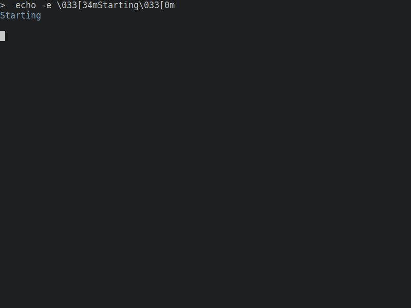
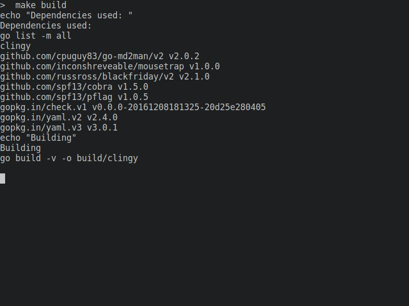
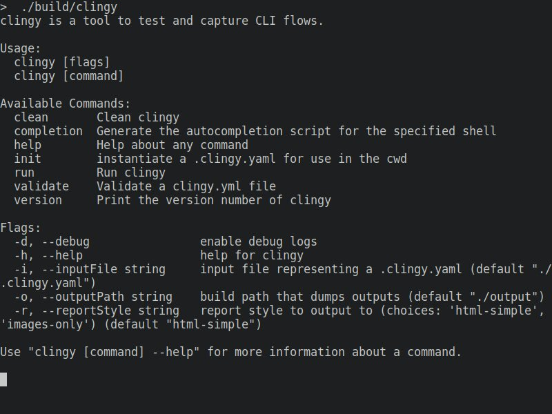
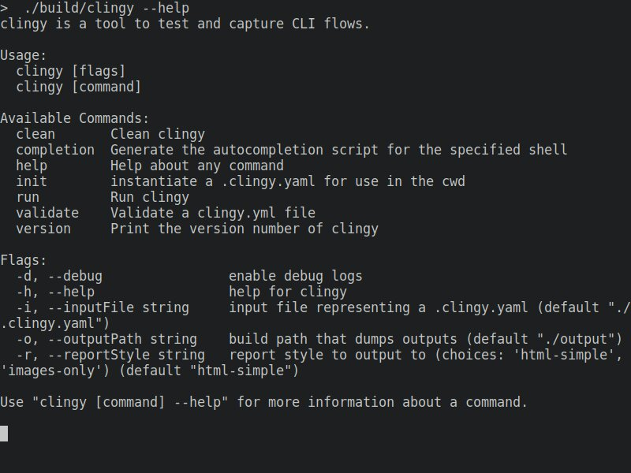
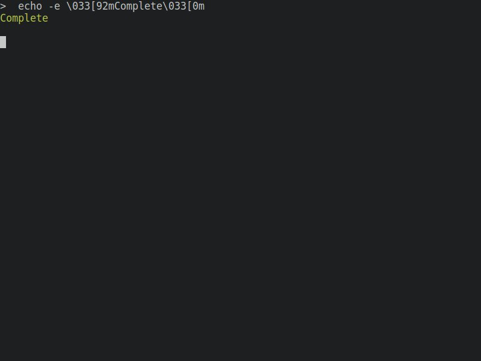

Clingy Report - clingy flow
Steps:
#0 start
starting clingy flow

#1 build clingy
building clingy with Makefile target

#2 clingy init
displaying printout of only calling clingy

#3 clingy help
display help text for clingy

#4 finish
finished clingy flow
